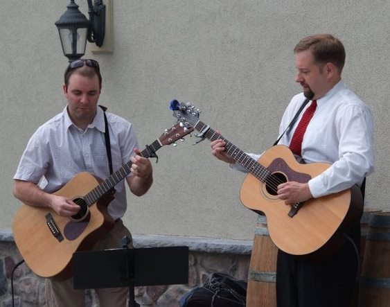

MATT KRESGE
|
|
|
Matt Kresge has been being performing acoustic solo gigs throughout the Philadelphia region for over 10 years. With a
diverse repertoire covering popular music from the 50’s through the 90’s and use of a loop pedal allowing layered
instrumentation to sound like a full band, Matt is always a crowd favorite at the many private affairs and establishments
he plays - Spring House Tavern (Ambler), Curran’s Irish Inn (Maple Shade), All-Star Bar (Gilbertsville), BW Bistro (Glen Mills),
Side Bar (West Chester), to name a few. Check out the ‘Pink Panther Theme’ featured in his song montage to hear
the loop pedal in action!
|
SHADY GROOVE
|
|
Shady Groove is an acoustic duo with 15 years experience playing live throughout the
Philadelphia area. Known for their impeccable harmonies and quality musicianship, their repertoire covers all types and
styles of popular music spanning from the 1950’s up through today: classic rock, reggae, modern rock, blues, folk,
bluegrass and everything in between. In addition to numerous wedding engagements and private affairs, Shady Groove has
performed at numerous popular establishments throughout the Philadelphia area: Flickerwood Winery (Kennett Square),
PJ Whelihan's (Blue Bell), The Wet Whistle (Jenkintown), Magerk’s (Ft. Washington), Union Jacks (Glenside),
Halligan's (Flourtown), All-Star Bar (Gilbertsville). For more information click this link to the
official website!
|
SHADY GROOVE QUARTET
|
|
The Shady Groove Quartet is an electrified version of the Shady Groove duo. With a similar
repertoire expanding through many genres from the last 6 decades, The Shady Groove Quartet provides entertainment for
all affairs, from bars and restaurant gigs to weddings and private parties.
|
GOOD VIBES INC.
|
|
Good Vibes Inc. is a vibraphone-driven band that mixes many styles of music from
rock to jazz to funk. Adding elements of jazz improvisation, Good Vibes Inc. puts a unique spin on popular
music by artists such as The Beatles, Led Zeppelin, Bob Marley and Herbie Hancock, not to mention many classic
instrumentals. Available as an electric quartet or an acoustic duo (vibraphone/acoustic guitar), Good Vibes Inc.
is able to accommodate any setting, from big events to low key cocktail hours. Please check out a live clip
HERE.
|
{kind=link}
{kind=link}
{kind=link}
{kind=link}